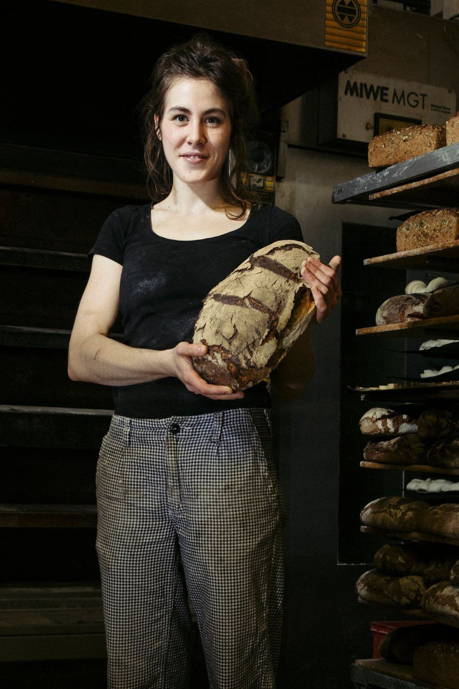
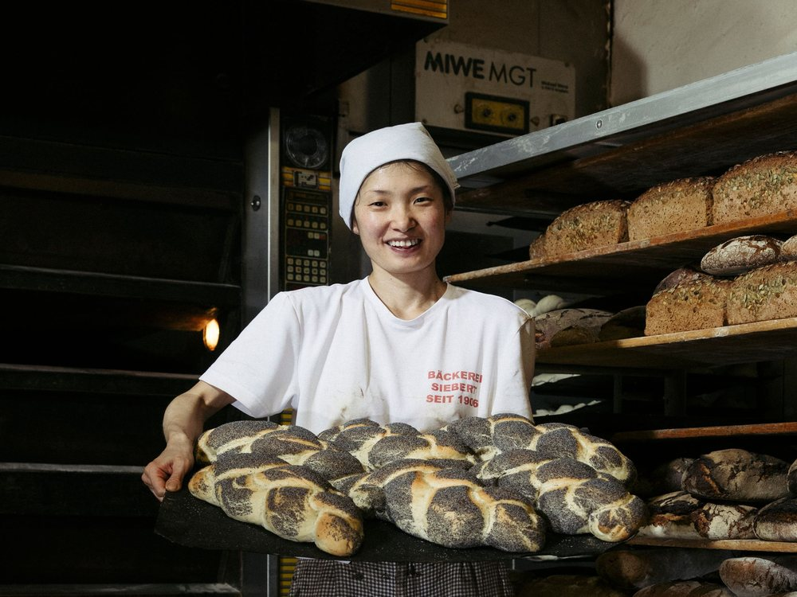
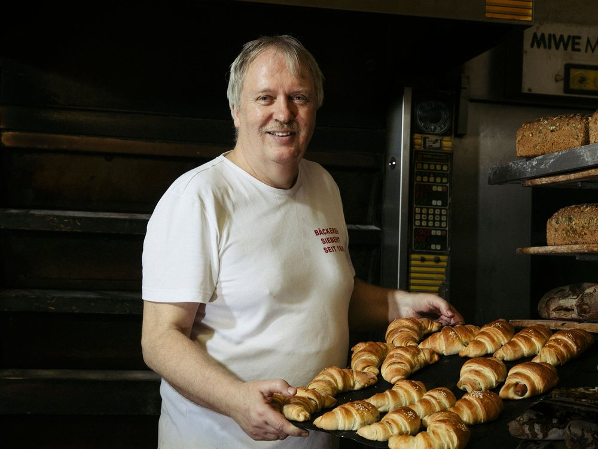

Ausbildung
Ausbildung, bei der Sonntag und Montag frei sind
Lernen Sie das Bäckerhandwerk in der ältesten familiengeführten Bäckerei Berlins. Unbefristeter Vertrag nach der Ausbildung.

Zwei Wege in die Backstube
Bäcker/in
Backwaren von Hand herstellen, Umgang mit Rohstoffen, Arbeit in der Backstube. Gut, wenn Sie gern früh anfangen und mit Mengen rechnen können.

Fachverkäufer/in
Warenkunde, Beratung, Warenpräsentation und Snacks. Gut, wenn Sie Freude am Umgang mit Menschen haben.

Was Sie davon haben
5-Tage-Woche, Sonntag und Montag frei
Unbefristeter Vertrag nach der Ausbildung
Weihnachts- und Urlaubsgeld, Prämien
Kostenlose Verpflegung, Mitarbeiterrabatt
Verkürzung der Ausbildung möglich
Mitarbeiterevents, Entwicklungsmöglichkeiten